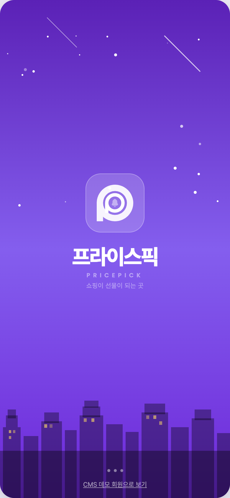
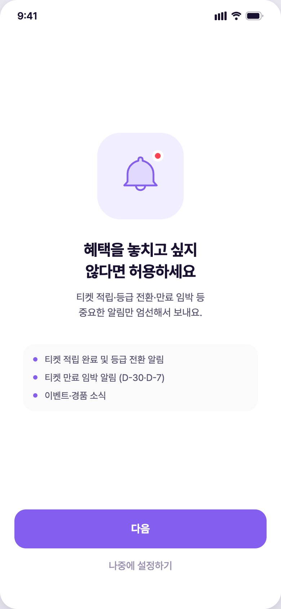
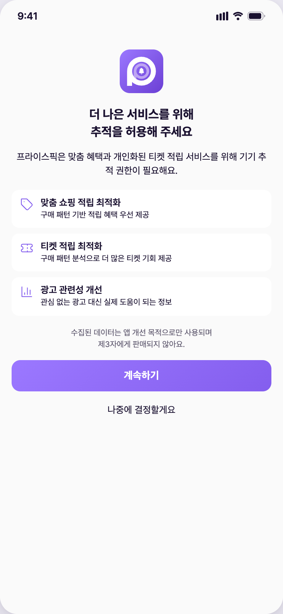
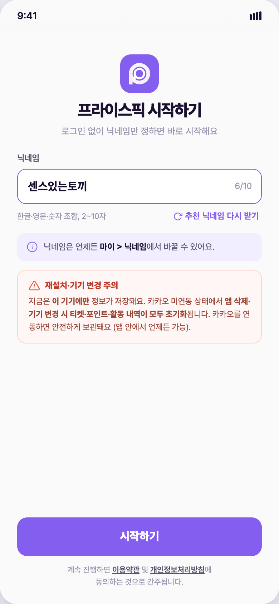
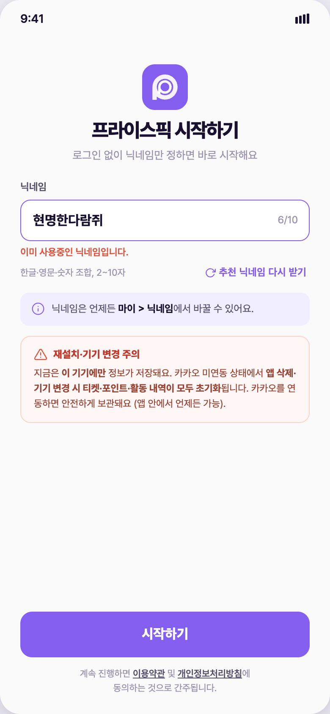
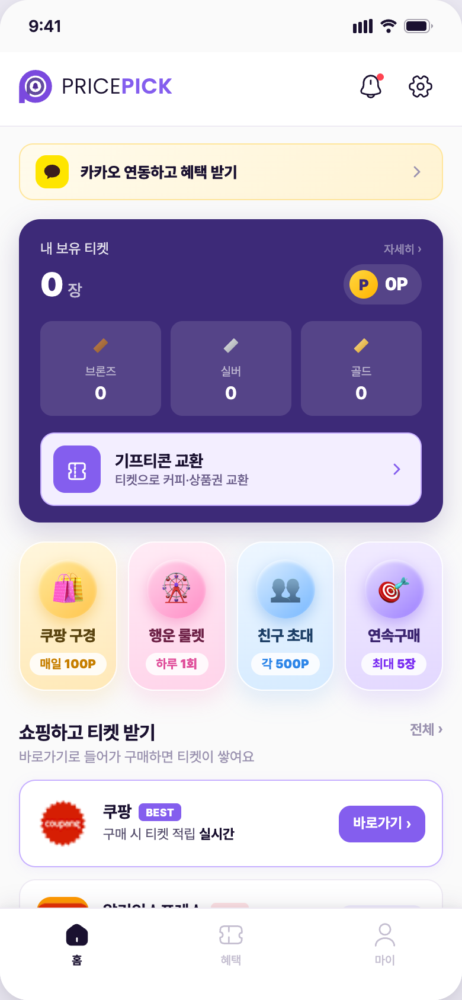
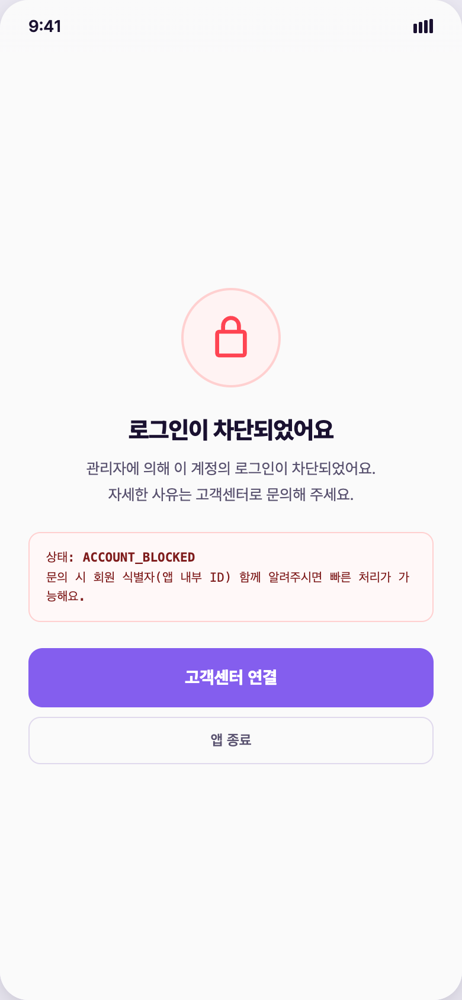
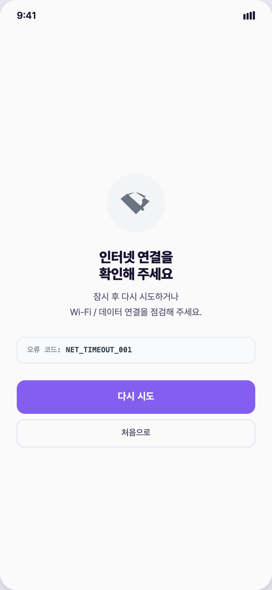
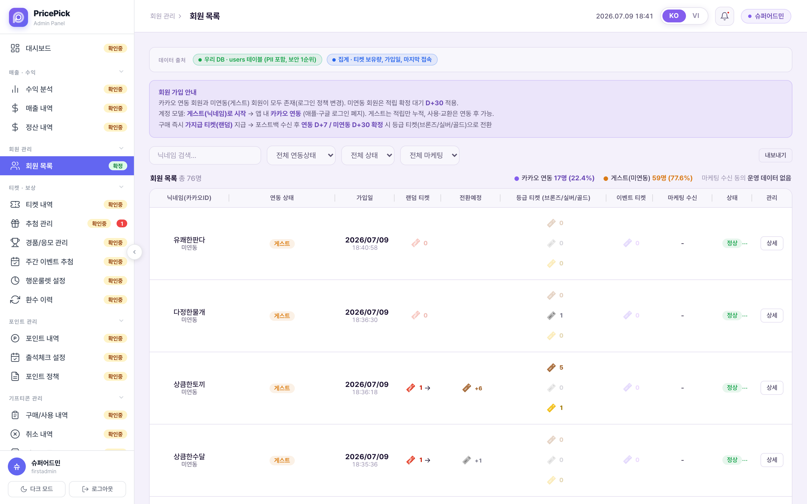

가입·로그인 프로세스 스토리보드
최초 설치 진입부터 홈 도달까지 — 로그인 없는 닉네임 가입, 실제 배포본 화면 캡처 기반
스플래시 — 세션 확인 분기
앱 실행 시 스플래시에서 인증 세션을 확인한다. 기존 계정(익명 인증 세션)이 살아 있으면 온보딩을 건너뛰고 홈으로 직행, 세션이 없으면(최초 설치·탈퇴 후 재진입) 온보딩으로 진입한다.

알림 권한 — 앱 프리팝업 + iOS 시스템 팝업
시스템 팝업을 띄우기 전에 앱 자체 화면으로 알림의 가치(적립·등급 전환·만료 임박 D-30/D-7·이벤트)를 먼저 설명한다. "다음"을 눌러야 iOS 시스템 팝업이 뜨고, "나중에 설정하기"로 건너뛸 수 있다.

ATT 추적 허용 — 프리팝업 + iOS 시스템 팝업
알림과 같은 2단 구조. 앱 프리팝업이 맞춤 적립·티켓 기회·광고 관련성 등 이점을 설명한 뒤 "계속하기"를 누르면 iOS ATT 시스템 팝업("앱이 추적하지 않도록 요청" / "허용")이 뜬다. 거부해도 가입 진행에는 영향이 없다.

닉네임 설정 — 가입의 전부
"로그인 없이 닉네임만 정하면 바로 시작해요." 입력란에는 DB에서 중복을 확인한 추천 닉네임이 자동으로 채워지며, "추천 닉네임 다시 받기"로 재추천받거나 직접 입력할 수 있다(한글·영문·숫자 2~10자). 직접 입력값도 저장 전에 중복 확인을 거쳐, 중복이면 "이미 사용중인 닉네임입니다." 인라인 에러로 차단된다. 화면 하단에 재설치·기기 변경 시 초기화 경고를 명시한다. 별도 약관 동의 스텝 없이 "계속 진행하면 이용약관·개인정보처리방침 동의 간주" 고지로 처리.


users 문서 생성 — nickname, linked_kakao:false, status:'active', created_at + 포인트 지갑(user_points 잔액 0) 동시 생성.
홈 진입 — 가입 완료
닉네임 저장 즉시 홈으로 진입한다. 초기 상태는 0P·티켓 0장이며, 미연동 상태이므로 홈 상단에 카카오 연동 유도 배너가 노출된다(연동 흐름은 카카오 연동 스토리보드에서 다룸). 초대 링크(?invite=코드)로 진입해 가입한 경우 이 시점에 초대코드가 자동 등록된다(친구초대 스토리보드 참조).

재실행 — 로그인 화면 없는 자동 복원
앱을 껐다 다시 켜면 인증 세션이 자동 복원되어(익명 인증 세션 유지) 온보딩·닉네임 화면을 거치지 않고 스플래시에서 바로 홈으로 이동한다. 별도 "로그인" 행위 자체가 없는 구조다. 다른 기기에서 데이터를 복원하려면 카카오 연동이 유일한 수단이다.

진입 차단·실패 — 차단 계정 / 네트워크 오류
운영자가 어뷰징·정책 위반으로 계정을 차단(정지)하면 진입 시 "로그인이 차단되었어요" 화면(ACCOUNT_BLOCKED)이 뜨고 고객센터 연결만 가능하다. 진입 과정에서 네트워크 응답이 실패하면 오류 화면(NET_TIMEOUT_001)에서 재시도하거나 처음으로 돌아간다.


운영자: 회원 목록 — 가입 회원 확인
CMS "회원 관리 > 회원 목록"에서 새로 가입한 회원을 확인한다. 첫 컬럼 "닉네임(카카오ID)"에 미연동 회원은 「미연동」으로 표시되고, 상태(정상/정지 등)·가입일·보유 티켓·포인트가 함께 집계된다. 회원 행의 "상세"에서 개별 회원 정보 조회·수정이 가능하다.
